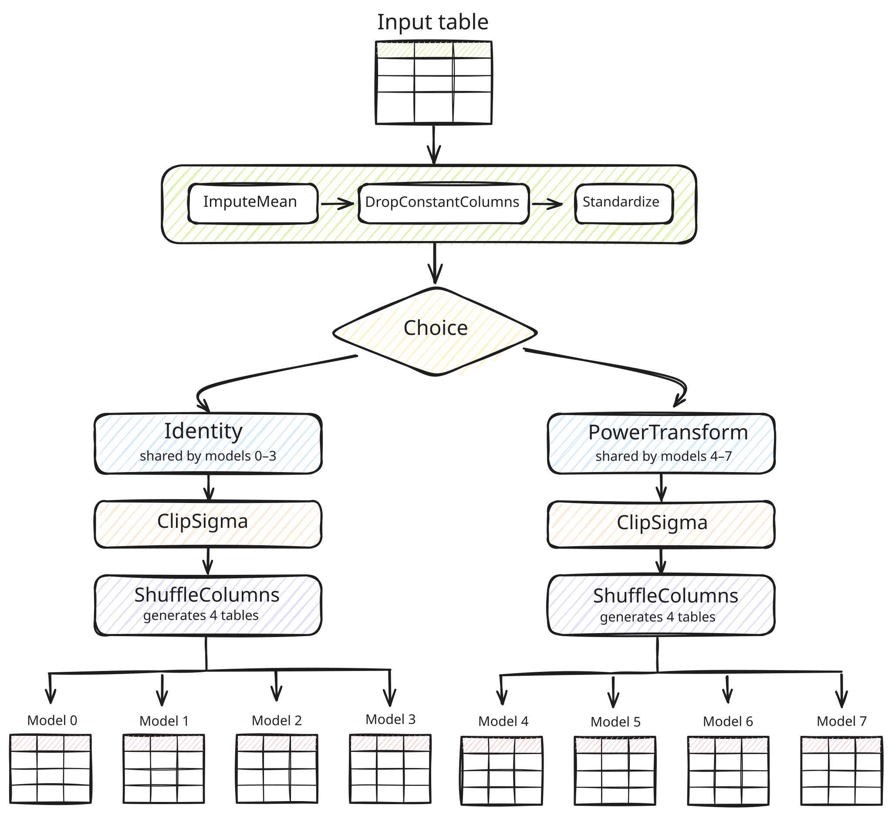
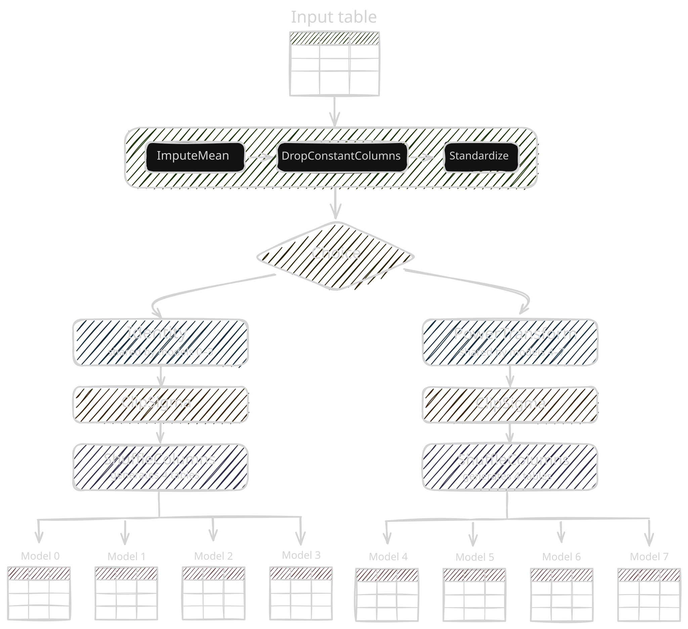

Data Processing#
A Recipe defines how data crosses a model boundary: it transforms inputs into the space a model expects and maps the model’s outputs back to the original space, keeping the same auditable transforms on both sides of the model.
Concepts#
The basic unit of a recipe is a Processor.
A list of all available processors grouped by their domain and semantic type is outlined in the API reference.
A
Processortransforms aTableTensorand returns a newTableTensor.A stateful
Processorlearns state when you callfit()(e.g.,Standardizelearns each column’s mean and standard deviation); a stateless one does not (e.g.,Softmax).
A Processor is fully composable:
A
Sequentialprocessor applies a sequence of processors.A
StypeDispatchprocessor applies a processor per semantic type.A
TaskDispatchprocessor applies a processor per task (e.g., classification or regression).
Processors let you define powerful recipes that manage the full pre-processing pipeline of input features and targets, as well as post-processing pipelines of model outputs. In particular:
Recipe.features: aProcessorthat operates on model inputs, transformed before the model.Recipe.target: aProcessorthat operates on targets, transformed before the model. For regression tasks, it is also used to invert model outputs back to their original space.Recipe.output: aProcessorthat operates on model outputs (after the target inverse in regression tasks), e.g., to reduce outputs from multiple estimators or to turn logits into probabilities.
Usage#
Each model defines a default recipe that closely mimics pre- and postprocessing routines of its official implementation (e.g., take a look at the default recipe of TabICLv2).
Recipes are plain Python objects, so they can be inspected, copied and modified.
This makes it easy to keep the default model contract while changing one part of the pipeline.
For example, TabICLv2 does not consume raw datetime columns directly.
To support datetime inputs, you can, e.g., prepend a datetime branch to the recipe that expands timestamps into numerical calendar features before running the rest of the default feature pipeline:
import sdm
import sdm.processing as sp
recipe = sdm.models.TabICLv2.default_recipe().prepend_features(
sp.StypeDispatch(
datetime=sp.AddCalendarFields(
fields=("minute", "hour", "weekday", "day_of_month", "month"),
)
)
)
You can also define a recipe from scratch when you want full control over the transformations applied to features, targets, and outputs:
import sdm
import sdm.processing as sp
recipe = sp.Recipe(
# First impute missing values, then standardize:
features=[sp.ImputeMean(), sp.Standardize()],
target=sp.StypeDispatch(
# Align and shuffle classes for classification:
categorical=[
sp.AlignCategories(),
sp.ShuffleCategories(),
],
# Standardize the targets for regression:
numerical=sp.Standardize(),
),
output=sp.TaskDispatch(
# Convert logits to probabilities for classification tasks:
classification=sp.Softmax(temperature=0.9),
),
)
When a custom recipe is passed to an ICLModel, the model applies the feature, target, and output pipelines automatically at the appropriate points in its execution.
model = sdm.models.TabICLv2(device="cuda")
model(..., recipe=recipe)
You can also call the individual processors directly to inspect intermediate representations:
recipe.features.fit(table)
table = recipe.features.transform(table)
Ensembling#
{kind=link}

{kind=link}
